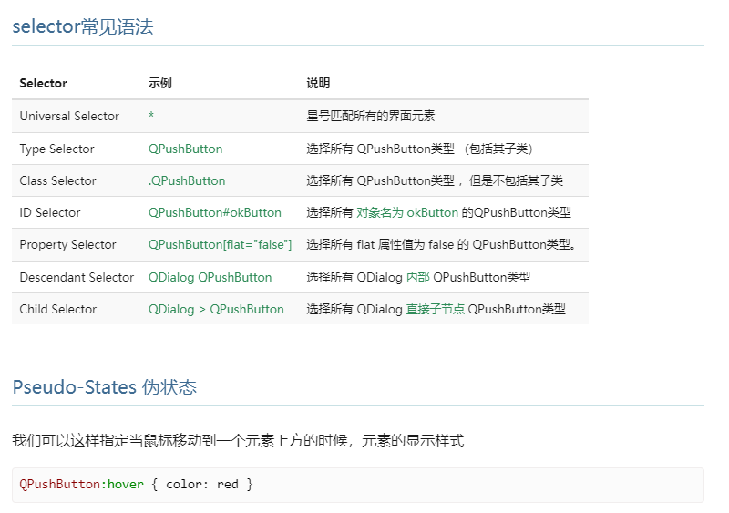

使用 python 我们也可以开发桌面应用（在 pc 上运行的软件，pyqt5 好像还不支持手机 app）平时做做小工具还是挺方便的。这次我们一起学习一下 pyqt5
环境安装
|
|
python 版本不要过高， 需要适配 pyqt5 ，像 3.8，3.9 是可以的，高版本可能会出现适配问题
设计理念
- mvc
- view
- 界面
- controller
- 用户交互逻辑
- model
- 后台执行逻辑
- view
开发流程
整体开发逻辑可以类比网页，有很多相似之处：
-
各种控件 相当于 html 的各种标签
-
窗口
-
mainwindow
- 全面
- 高级功能
- 菜单栏
- 工具栏
- 状态栏
-
dialog
- object
- 设置类名
- 场景
- 简洁
- 无最大最小化按钮
- object
-
-
常用控件
- button
- push button
- checkbox
- radio button
- 设置组
- 界面中，选中多个设置组
- 代码中，使用 QButtonGroup
- 设置组
- label
- containers
- tab
- 多个页面
- tabtext
- 编辑名称
- group
- 分组
- ctrl
- 拖动
- set checkable
- 设置区域是否激活
- tab
- input
- lineedit
- 输入框
- text（）
- 获取数据
- setText（）
- 设置数据
- placeholder
- 提示内容
- copy()
- clear()
- 设置密码
- 信号
- returnPressed
- 按下回车的信号
- editingfinished
- 停止编辑信号
- returnPressed
- combo box
- 信号
- activated
- 信号
- browser text
- lineedit
- button
-
复杂控件
- table
- tablewidget
- tree
- QTreeWidgetItem
- 树的节点
- treewidget
- toplevelitemcount()
- toplevelitem()
- child()
- childcount()
- currentitem
- 选中的 item
- takechilren
- QTreeWidgetItem
- 自适应
- QHeaderView.Stretch
- 作用
- 树
- 表格
- 控件选择
- findchildren（）
- parent（）
- table
-
布局
- 布局分类
- 水平
- 垂直
- 网格
- 设置方式
- 右键设置
- layout stretch
- 设置 layout 各个控件的占比
- size policy
- fixed
- 默认大小
- fixed
- 布局分类
-
-
qss 相当于 css
-
selector
Syntax Description * 所有界面元素 #id 只选择一个 类名 选择所有对象和子类 .类名 只选择对象 类名：hover 当鼠标移动到元素上面改变 -
attribute
- 字体
- font-size
- color
- background-color
- 边框
- border
- 大小
- height
- width
- 字体
 - 语法：selector{attribute:value};
类名【属性=】 选择属性符合的对象 QDialog QPushButton 所有子节点 QDialog > QPushButton 直接子节点
-
-
信号和槽函数 相当于 js
- 使设计的界面动起来
使用 designer.exe 绘制应用的界面，保存为*.ui 文件
在下载 pyqt5 的虚拟环境目录搜索设计师应用的关键字 designer, 打开这个应用就可以设计界面了
绘制界面的流程如下：
- 拖拽各个使用的控件
- 选择 n 个控件， 设置它们的布局（水平， 垂直， 网格）
- 给需要控制的控件设置objectName ，objectName会转为属性， 方便后续写代码寻找这个控件
使用命令把*.ui 转为*.py 文件
|
|
继承生成的*.py 文件的类, 进行功能开发
-
搭建结构使 gui 运行
1 2 3 4 5 6 7 8 9 10 11 12 13 14 15 16 17 18 19 20 21 22 23 24 25 26 27 28 29 30 31 32from PyQt5.QtCore import Qt from PyQt5.QtWidgets import QApplication, QMainWindow, QCheckBox, QMessageBox, QInputDialog, QLineEdit from PyQt5.QtGui import QIcon from my_clock import Ui_MainWindow import sys # 1. 继承*.py文件的类Ui_MainWindow class MyGui(QMainWindow, Ui_MainWindow): def __init__(self) -> None: super().__init__() self.setupUi(self) # 设置窗口最大最小值和关闭按钮 self.setWindowFlags(Qt.WindowMinMaxButtonsHint | Qt.WindowCloseButtonHint) # 2. 设置信号和槽函数的连接: clicked是一个信号, 设置它连接槽函数self.run self.pushButton_run.clicked.connect(self.run) # 槽函数 def run(self): pass if __name__ == '__main__': app = QApplication(sys.argv) app.setWindowIcon(QIvon('logo.png')) # 设置icon mygui = MyGui() mygui.show() sys.exit(app.exec_()) -
进行信号和槽函数的编写
-
当遇到耗时操作(运行超过 1s 的代码)，为了防止界面卡死，需要使用线程启动
使用 python 中的 thread 或者 pyqt5 的 Qthread 来执行耗时函数
-
信号与槽
- 对象之间传递数据
- str
- list
- 对象之间传递数据
-
event
- 鼠标
- closeEvent()
- 退出时执行
-
button.clicked.connect(函数名)
- partial（函数名，参数）
- 监听信号
- lambda: 函数名（）
- QMessageBox
- 弹框
- infomation()
- warning()
- question()
- 设置按钮
- Yes
- No
- 设置按钮
- 弹框
- QFileDialog
- getOpenFileName(self,打开文件,./)
- getExistingDirectory()
- QInputDialog
- 多界面
1 2self.sub_widget = SubWidget() self.sub_widget.show()- 多界面通信
- 使用信号和槽
- 多界面通信
- 提示语
- tooltip
- 字体设置
- app.setfont（）
- tab 顺序
- 设置
- 其余的建议
- 内部逻辑添加 try，如果错误了，可以弹窗提示，而不是软件崩溃
- exe 路径获取
1 2if getattr(sys, 'frozen', False): applications_path = os.path.dirname(sys.executable)
项目打包
先安装 pyinstaller 模块
|
|
然后打包为可执行文件
|
|
注意点： 被打包的文件同一层级中，一定不能有init.py 打包的软件不能跨平台，需要在不同的平台下打包吧
其他实用功能
- QFileDialog 文件选择
- QMessageBox 弹框